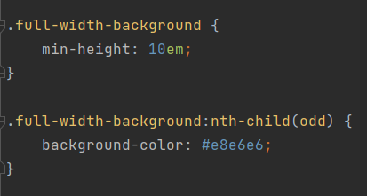
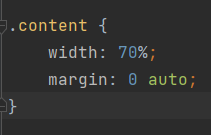

Werken in lagen
Bij een achtergrond die de volledige breedte van het scherm moet innemen werk je best in lagen. De onderste laag is de achtergrond. In dit geval zijn het divs die alternerend een andere achtergrond kleur krijgen.
De inhoud (content) die getoond moet worden zet je dan in een 2de laag die bovenop de eerste komt (child div) en geef je een breedte die smaller is dan het scherm en gecentreerd staat.